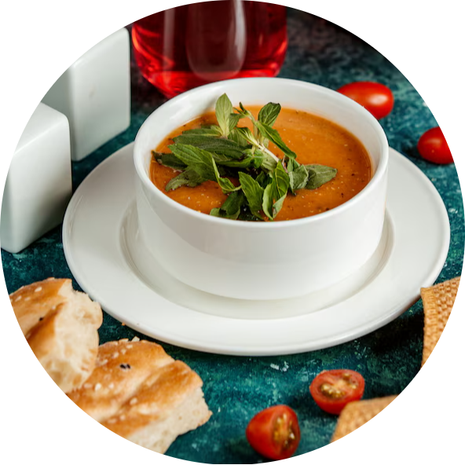
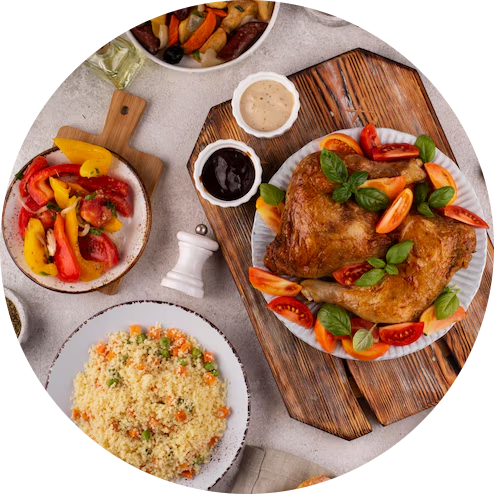
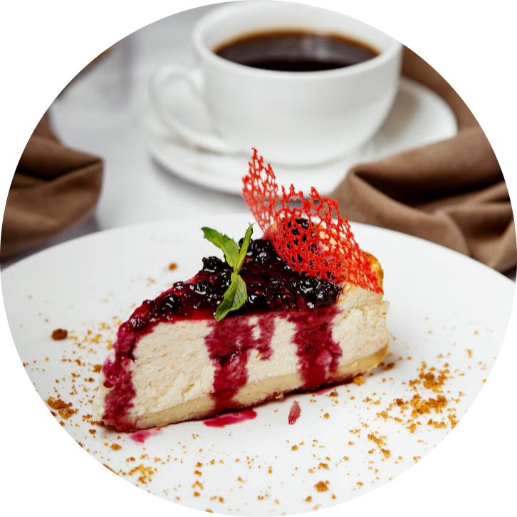

Welcome to My Recipe Book
Hey food lovers! 👋
Looking for tasty, new recipes to try at home? You’re in the right place!
Explore delicious dishes, learn to cook like a pro, and don’t forget to share your favorite recipes with others!
Recipe of the day
Manto
Manto is a beloved traditional Afghan dish, featuring flavorful spiced meat wrapped in soft, delicate dumpling wrappers. Often served during special gatherings and celebrations, this hearty comfort food embodies the warmth and hospitality of Afghan culture. Every bite is a blend of tradition, taste, and timeless culinary heritage.Want to taste the tradition? Check it out!

The Tastes List
|  |
AppetizersA variety of delicious appetizers to excite your taste buds and start your meal right |
 |
Main CoursesA list of many delicious main courses specially made for food lovers to enjoy |
 |
DessertsA sweet collection of desserts that perfectly complete your meal experience |